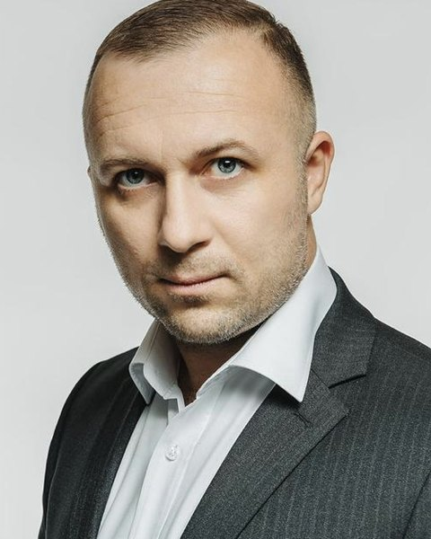

Ostap Dotsenko
Business Development & Marketing Leader
Business Development | B2B Marketing | E-commerce | Russia, China, Southeast Asia
Phone: +86 137 6171 6355; +7 985 874-49-58 (WhatsApp)
E-mail: norbanking@gmail.com | Telegram: @ostapdotcenko
LinkedIn: linkedin.com/in/ostapdotсenko (11,000+ followers)
Website: ostapdotcenko.ru | Location: Shanghai, Moscow (hybrid)
Target role
CBDO, CMO or Head of International Expansion: Russia — China — Southeast Asia.
Profile
13+ years in business development and marketing at the crossroads of Russia, China and Southeast Asia. Led B2B marketing at Megamarket
(Russia’s #3 e-commerce, Sber ecosystem) and the O2O business at AliExpress Russia & CIS (Alibaba Group); since 2025, owner
of a company in Shanghai. Teams of up to 40, a marketing budget of over RUB 1 bn a year, P&L at Megamarket, Alibaba and my own business.
Federal programs, partnerships with banks, telecoms and government bodies. 20+ countries, 5 languages, including Chinese (B2+).
Key results
- +350% sellers year over year, 50,000 sellers on the platform (Megamarket).
- RUB 3 bn net profit — my programs’ impact, Q4 2023 (Megamarket).
- Federal program with the Ministry of Economic Development of Russia in 86 regions (Megamarket).
- From 0 to 2,000 companies in the “Made in Russia” program, 2024 (Megamarket).
- GMV $48M, +100% year over year; new buyers +185% (AliExpress Russia & CIS).
- Average campaign ROI 25x; 120+ media holding partners (Alibaba Group, 2020–2022).
- Turnkey corporate forum for Megamarket (Sber) in Shenzhen with 1,200+ attendees (own business).
Work experience
Owner & Founder — Shanghai Pinnacle Technology Co., Ltd.
2025 — present | Shanghai, China
GlobalTechTour — tech expeditions and benchmark tours across China and SEA; Aura Robotics — robotics and automation, sourcing robots directly from Chinese manufacturers. Owner’s P&L.
- Delivered a turnkey corporate forum for Megamarket (Sber) in Shenzhen with 1,200+ attendees: logistics, venue and business program.
- Organize delegation visits to the factories and R&D centers of BYD, Xiaomi, Baidu, Meituan, Poizon, Leju Robotics; Aura clients get direct access to the leadership and R&D of robot manufacturers.
- BelMol closed a dairy-automation deal in a 2-hour meeting at the Kepler factory; SolarTek toured Leju Robotics, Robotera, AgiBot and Kepler in 5 days.
Head of B2B Marketing — Megamarket (Sber ecosystem)
2023 — 2025 | Russia
Russia’s #3 e-commerce. Team of 16–40 (direct and through leads), marketing budget of over RUB 1 bn a year, P&L ownership for the business line.
- Built B2B seller-acquisition marketing: +350% sellers year over year, 50,000 sellers on the platform; my programs’ impact — RUB 3 bn net profit (Q4 2023).
- Launched a federal entrepreneur support program with the Ministry of Economic Development of Russia, run through “My Business” centers in 86 regions: acquisition strategy, materials and regional communications built from scratch.
- Ran the federal Megasreda marathon in 20 cities — from concept and logistics to content and PR; 1M+ views.
- Launched “Made in Russia”: brand program, onboarding and video campaign — from 0 to 2,000 companies.
- Inclusive marketplace for producers with disabilities: positioning, UX, PR campaign.
Independent Adviser — AdTech / MarTech / EduTech
2022 — 2023 | Uzbekistan, Kazakhstan, Southeast Asia
- Advised companies including MyDars and HiTarget (Indonesia): 20+ partners, product localization for SEA.
Ostap Dotsenko — CV, page 1 of 2
Head of O2O & New Business — Alibaba Group (AliExpress Russia & CIS)
2020 — 2022 | Russia and CIS
Team of up to 5, P&L ownership for the O2O business line.
- Built O2O partnerships with Alfa-Bank, Tinkoff, MTS Bank, MegaFon, Beeline, Rosneft and 120+ media holdings.
- GMV $48M (+100% year over year), new buyers +185%, average campaign ROI 25x.
Co-founder — O.F.D Creative Agency
2017 — 2020 (2017 — preparation and launch) | Shanghai, Hong Kong
Owner’s P&L.
- Joint Chinese-Russian team project: advertising solutions that promote businesses in the Chinese and Russian markets.
- Clients: FOREO, DECATHLON, Bank of China, WWE, CDEK.
Head of Commerce & BD — Data Centric Alliance
2015 — 2017 | Moscow, Shanghai
- Led media buying and business development in Asia; partners — Google HK, Yahoo HK, Tencent, Ctrip, Baidu.
BD Manager (China / SEA) — CityAds Media
2013 — 2015 | China, Southeast Asia
- Grew performance and affiliate marketing (CPA / CPC / CPL) in China and Southeast Asia; clients included Sasa (Hong Kong).
Key skills
- Business Development: market-entry strategy, partnerships and alliances, C-level negotiations, BD Asia & CIS, launching new business lines.
- Marketing: B2B Marketing, Demand Generation, Performance Marketing, Product Marketing, Sales Enablement, brand programs.
- Technology and data: e-commerce and marketplaces, AdTech / MarTech, Marketing Automation, CRM & Analytics, O2O.
- Communications: GR and government programs, federal events, PR; 50+ expos and forums in Russia and the CIS.
Languages
- Russian — native; English — C1; Chinese — B2+; Uzbek — B1; Korean — A2.
Education
- MIU — Civil Law.
- Lyceum under TashSIL — Korean Language Teacher.
Media and speaking
- RBC — interview “The key is to know your fundamentals and not be afraid”; RBC Industries.
- Sber Business — expert guide “Marketplaces: the complete guide to earning”.
- TASS — Ulyanovsk region and Megamarket develop a regional product showcase; “My Business” — Megasreda marathon, 1M+ views.
- Speaking: Russian Retail Show 2024 (speaker), Amber Forum 2024 (panel discussion), Manufacturers’ Summit, Irkutsk, 2024 (panel), Russian Retail Week 2025, SCO Forum 2025, federal Megasreda marathon.
Contact and links
References available on request.
Ostap Dotsenko — CV, page 2 of 2